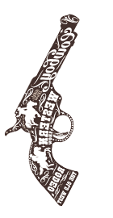

Pablo Emilio Escobar Gaviria (1 December 1949 – 2 December 1993) was a Colombian drug lord, narcoterrorist, and politician, who was the founder and sole leader of the Medellín Cartel. Dubbed "the king of cocaine", Escobar was one of the wealthiest criminals in history, having amassed an estimated net worth of US$30 billion by the time of his death—equivalent to $70 billion as of 2022—while his drug cartel monopolized the cocaine trade into the United States in the 1980s and early 1990s.
